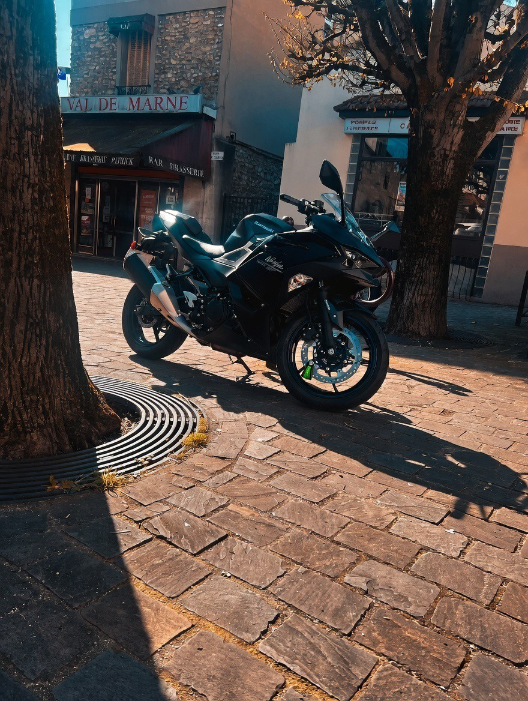

À propos
Élève ingénieur en Informatique et Applications, je m'épanouis à la frontière entre le Développement Logiciel et les Technologies des Médias.
Passionné par l'univers des jeux vidéo, j'ai développé un goût prononcé pour les interfaces soignées et les architectures robustes. Mon parcours m'a permis de solidifier mes bases en Java, tout en explorant le C/C++, Python et le html/css pour des projets plus proches du système et du multimédia.
Curieux et autodidacte, je privilégie des outils comme Git pour le versioning et Typst pour la documentation, car je suis convaincu que la propreté du code est indissociable de la qualité du produit final.
Actuellement à la recherche d'une alternance pour septembre 2026, je souhaite mettre mes compétences techniques et ma créativité au service de projets innovants dans le développement logiciel, l'ingénierie média ou tout autre domaine informatique qui corresponderont a mon profil.
Mes Projets
CV Typst
Conception et codage de la mise en page de mon CV en utilisant le langage de scripting Typst.
Mon site web
Conception et codage d'un site Web comme portfolio pour futur projets (sur lequel vous êtes ^^).
Mes passions

La Moto
Passionné par l'ingénierie mécanique et la liberté que procure la route. Qu'il s'agisse de l'entretien technique ou de longues balades, la moto représente pour moi un équilibre parfait entre précision et évasion.